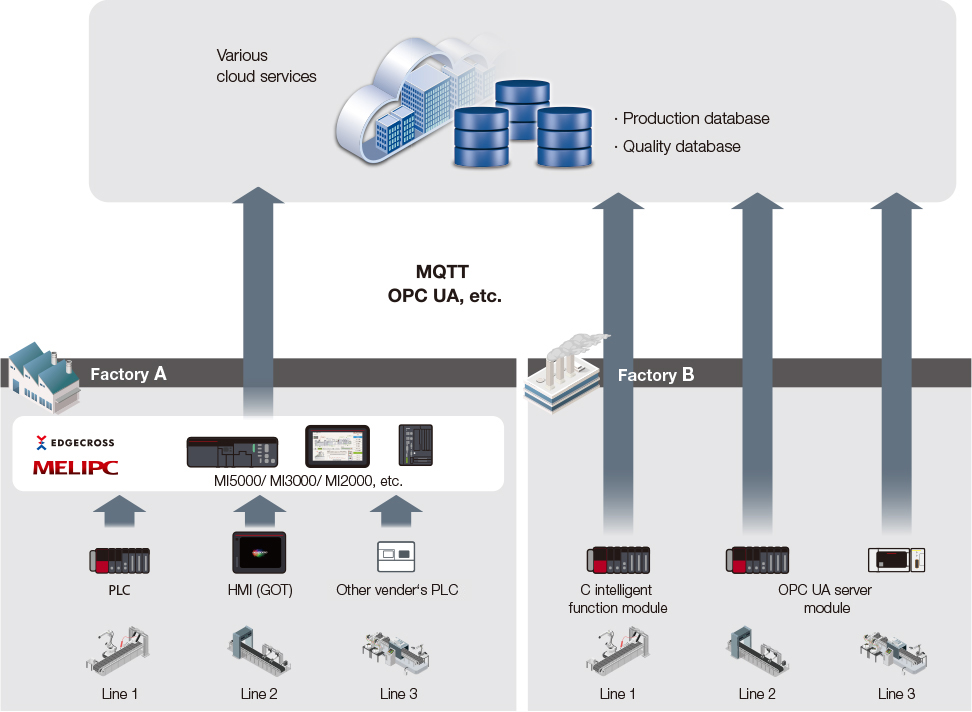

Solutions
FA Remote

Remote Monitoring

Case.05 Collect and utilize production and quality data on a global scale, including overseas plants
- Remote Monitoring
Issues
Collect and utilize production and quality data on a global scale, including overseas plants
Solution
(1) Equipment operation information and quality information are collected via the various modules of Edgecross and PLCs.
(2) Connect to the cloud with secure communication protocols such as MQTT and OPC UA.

- *1 VM: Virtual machine. This use case uses Microsoft® Azure® Virtual Machines.
Benefits
- Build data infrastructure for production and quality information.
- Can be deployed companywide as global standard infrastructure.